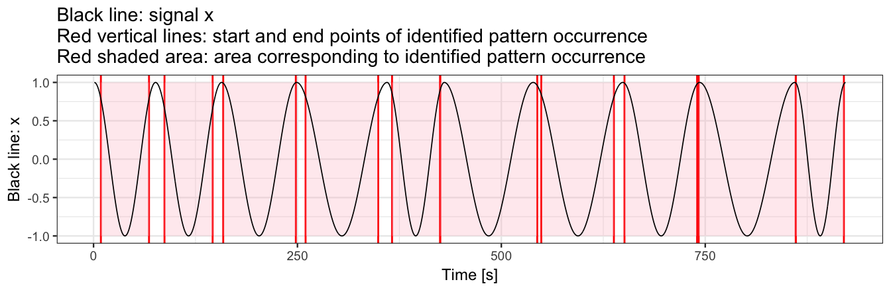
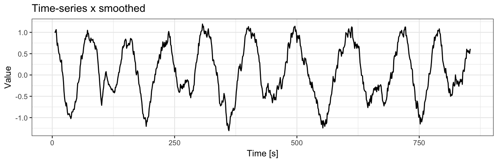
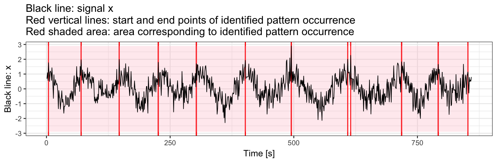

Introduction to adept package
Marta Karas
2019-03-05
Source:vignettes/adept-intro.Rmd
adept-intro.RmdIntro
adept package implements ADaptive Empirical Pattern Transformation (ADEPT) ([1]) method for pattern segmentation from a time-series x. ADEPT was designed for optimal use in performing fast, accurate walking strides segmentation from high-density data collected from a wearable accelerometer worn during continuous walking activity.
This vignette intends to introduce a reader to the ADEPT method and demonstrate the usage of the segmentPattern function which implements ADEPT method. Here, we focus on illustrating segmentPattern functionality via simulated data examples; see the *Walking strides segmentation with adept“* vignette ([2]) for an example of walking stride segmentation from subsecond accelerometry data with adept package.
ADEPT method
ADEPT identifies pattern occurrences from a time-series x via maximizing similarity (correlation, covariance etc.) between time-series x windows and a pattern template(s). It accounts for a possible presence of variation in both (1) pattern occurrence duration time and (2) shape over time:
Consider an example in which a pattern occurrence is changing, possibly multiple times, its duration time within a time-series
x. To address such scenario, ADEPT considers various scales of a pattern template(s) to allow for obtaining the higher similarity between a time-seriesxand a template.Consider an example in which an event we aim to segment takes more than one distinct pattern shape within time-series
x. To address such scenario, multiple pattern templates are allowed simultaneously in the ADEPT method.
Pattern template
Here, a pattern template is thought of as a numeric vector that represents the pattern of interest. In practice, a pattern template may be derived based on some pre-segmented small part of the data.
- See [1] where we show a way to derive walking stride templates from subsecond accelerometry data collected from sensors worn at left wrist, left hip and both ankles.
- See [2] for an example of employing walking stride templates derived in [1] to segment pattern from a separate, publicly available subsecond-level accelerometry data.
In this vignette, for the purpose of the presentation, a pattern template(s) will be a simulated data vector(s).
Install and load adept package
If not installed yet, install adept package from GitHub (devtools package needs to be installed to do it).
# install.packages("devtools") ## for installing packages from GitHub repository
devtools::install_github("martakarass/adept")Load adept.
Pattern segmentation with adept package
The examples below are organized into suites.
- Suites are characterized by some specific data generation setting, for example: Examples 1: signals simulated with no noise, same-length pattern.
- Examples are intended to illustrate
segmentPatternfunctionality, including effect of the function’s parameter usage, for example: Example 1(b): simple segmentation, modifypattern.dur.seqargument.
Examples 1: signals simulated with no noise, same length of all pattern occurrences
Simulate data
Simulate data:
- no noise in a simulated time-series
x, - all simulated pattern occurrences of the same length (vector length:
101).
## Generate signal and pattern template
x0 <- cos(seq(0, 2 * pi * 10, length.out = 1001))
x <- x0
template <- x0[1:101]
## Plot time-series `x`
data.frame(x = 1:length(x), y = x) %>%
ggplot() + geom_line(aes(x = x, y = y)) + theme_bw(base_size = 9) +
labs(x = "Time [s]", y = "Value", title = "Time-series x")
Plot pattern template. We shall use template object in the segmentation algorithm.
Example 1(a): run simple segmentation
Use segmentPattern function to identify pattern occurrences within a time-series x.
pattern.dur.seq <- c(90, 100, 110)
out <- segmentPattern(x = x,
x.fs = 1,
template = template,
pattern.dur.seq = pattern.dur.seq,
similarity.measure = "cor",
compute.template.idx = TRUE)
out
#> tau_i T_i sim_i template_i
#> 1 1 100 0.9994793 1
#> 2 101 100 0.9994793 1
#> 3 201 100 0.9994793 1
#> 4 302 100 0.9994793 1
#> 5 401 100 0.9994793 1
#> 6 501 100 0.9994793 1
#> 7 601 100 0.9994793 1
#> 8 701 100 0.9994793 1
#> 9 801 100 0.9994793 1
#> 10 901 100 0.9994793 1Segmentation output explained
Each row of the output data frame (here: out object above) summarizes information about one identified pattern occurrence:
-
tau_i- pattern occurrence start, expressed as an index of a time-seriesx, -
T_i- pattern occurrence duration, expressed in a time-seriesxvector length, -
sim_i- value of similarity statistic (here: correlation) between a pattern template and corresponding window of a time-seriesx(see Details insegmentPatterndocumentation), -
template_i- index of a pattern template corresponding to an identified pattern occurrence, orNAifcompute.template.idx = FALSEis used (see Details insegmentPatterndocumentation); here: we provided only one distinct pattern template, hence alltemplate_i’s are equal 1.
Example 1(b): use pattern.dur.seq argument to modify a grid of pattern duration
Similarly, we aim to 3identify pattern occurrences within a time-series x, but this time we include the true pattern duration time 101 in a grid of considered pattern durations (pattern.dur.seq).
We shall see that sim_i - a value of similarity statistic (here: correlation) - is now equal to 1 for each identified pattern occurrence. In other words, a perfect match between a time-series x and a template was obtained. It is possible because:
- the simulated time-series
xhas no noise, - we used a true (gold-standard) pattern template (
template), - we used true pattern duration time
101in a grid of considered pattern durations (pattern.dur.seq).
pattern.dur.seq <- 90:110 ## assume dense pattern duration grid ranging 90-110 seconds
out <- segmentPattern(x = x,
x.fs = 1, ## assume data frequency 1 observation per second
template = template,
pattern.dur.seq = pattern.dur.seq,
similarity.measure = "cor",
compute.template.idx = TRUE)
out
#> tau_i T_i sim_i template_i
#> 1 1 101 1 1
#> 2 101 101 1 1
#> 3 201 101 1 1
#> 4 301 101 1 1
#> 5 401 101 1 1
#> 6 501 101 1 1
#> 7 601 101 1 1
#> 8 701 101 1 1
#> 9 801 101 1 1
#> 10 901 101 1 1
Example 1(c): use x.fs argument to modify assumed frequency at which a time-series x is collected
The below example demonstrates usage of x.fs parameter. We shall see that if we:
- modify
x.fs- assumed frequency at which a time-seriesxis collected, expressed in a number of observations per second, - adjust accordingly
pattern.dur.seq- assumed grid of pattern duration times used in segmentation, expressed in seconds,
then the segmentation results stay the same as in Example 1(b).
pattern.dur.seq <- 90:110 * 0.01 ## assume pattern duration grid ranging 0.9-1.1 seconds
out <- segmentPattern(x = x,
x.fs = 100, ## assume data frequency 100 observations per second
template = template,
pattern.dur.seq = pattern.dur.seq,
similarity.measure = "cor",
compute.template.idx = TRUE)
out
#> tau_i T_i sim_i template_i
#> 1 1 101 1 1
#> 2 101 101 1 1
#> 3 201 101 1 1
#> 4 301 101 1 1
#> 5 401 101 1 1
#> 6 501 101 1 1
#> 7 601 101 1 1
#> 8 701 101 1 1
#> 9 801 101 1 1
#> 10 901 101 1 1Examples 2: signals simulated with no noise, length of pattern occurrences varies
Simulate data
Simulate data:
- no noise in a simulated time-series
x, - length of simulated pattern occurrences varies (their vector length ranges between
60and120.
## Generate signal and pattern template
## Grid of true pattern occurrence durations
set.seed(1)
s.grid <- sample(60:120, size = 10)
## True pattern assumed in data generation process
true.pattern <- cos(seq(0, 2 * pi, length.out = 200))
## Generate a time-series x that consists of "glued" pattern occurrences
## of different length
x <- numeric()
for (s.tmp in s.grid){
true.pattern.s <- approx(seq(0, 1, length.out = 200),
true.pattern,
xout = seq(0, 1, length.out = s.tmp))$y
if (length(x) > 0){
x <- c(x, true.pattern.s[-1])
} else {
x <- c(x, true.pattern.s)
}
}
## Define template
template <- true.pattern
## Plot time-series `x`
data.frame(x = 1:length(x), y = x) %>%
ggplot() + geom_line(aes(x = x, y = y)) + theme_bw(base_size = 9) +
labs(x = "Time [s]", y = "Value", title = "Time-series x")Plot pattern template (it is the same as in Examples 1).
data.frame(x = seq(0, 1, length.out = length(template)), y = template) %>%
ggplot() + geom_line(aes(x = x, y = y), color = "red") +
theme_bw(base_size = 9) + labs(x = "Template phase", y = "Value", title = "Pattern template")## Function to plot segmentation results in a fancy way with ggplot2
library(ggplot2)
out.plot1 <- function(val, out){
yrange <- c(-1, 1) * max(abs(val))
y.h <- 0
plt <- ggplot()
for (i in 1:nrow(out)){
tau1_i <- out[i, "tau_i"]
tau2_i <- tau1_i + out[i, "T_i"] - 1
plt <-
plt +
geom_vline(xintercept = tau1_i, color = "red") +
geom_vline(xintercept = tau2_i, color = "red") +
annotate(
"rect",
fill = "pink",
alpha = 0.3,
xmin = tau1_i,
xmax = tau2_i,
ymin = yrange[1],
ymax = yrange[2]
)
}
plt <-
plt +
geom_line(data = data.frame(x = 1:length(val), y = val),
aes(x = x, y = y),
color = "black",
size = 0.3) +
theme_bw(base_size = 9) +
labs(x = "Time [s]", y = "Black line: x",
title = "Black line: signal x\nRed vertical lines: start and end points of identified pattern occurrence\nRed shaded area: area corresponding to identified pattern occurrence")
plot(plt)
}Example 2(a): run simple segmentation
By using a dense grid of duration of pattern occurrences (pattern.dur.seq), we shall obtain a perfect match between time-series x and a template rescaled to various scale parameters. Hence, in the segmentation results plot below, one can see that the start and end points of an individual identified pattern occurrence, marked with red vertical lines, do overlap.
pattern.dur.seq <- 60:120
out <- segmentPattern(x = x,
x.fs = 1,
template = template,
pattern.dur.seq = pattern.dur.seq,
similarity.measure = "cor",
compute.template.idx = TRUE)
out
#> tau_i T_i sim_i template_i
#> 1 1 76 1 1
#> 2 76 82 1 1
#> 3 157 93 1 1
#> 4 249 112 1 1
#> 5 360 71 1 1
#> 6 430 110 1 1
#> 7 539 111 1 1
#> 8 649 95 1 1
#> 9 743 118 1 1
#> 10 860 63 1 1
## Plot segmetation results
out.plot1(x, out)
Example 2(b): run simple segmentation with less dense grid of assumed duration of pattern occurrences
In this example we employ a less dense grid of assumed duration of pattern occurrences (pattern.dur.seq). As a result, we no longer see a perfect match between a time-series x and a template; we shall see that sim_i values are not all equal to 1 and we do see a lack of overlap between the start and end points of an individual identified pattern occurrence, as marked with red vertical lines.
- The reason to consider a less dense
pattern.dur.seqgrid of assumed duration of pattern occurrence in segmentation is a shorter computational time. - We will see later that when peak detection tuning procedure is employed, having a “maximally dense” grid is not necessarily needed.
pattern.dur.seq <- c(60, 90, 120)
out <- segmentPattern(x = x,
x.fs = 1,
template = template,
pattern.dur.seq = pattern.dur.seq,
similarity.measure = "cor",
compute.template.idx = TRUE)
out
#> tau_i T_i sim_i template_i
#> 1 9 60 0.9913537 1
#> 2 87 60 0.9875419 1
#> 3 159 90 0.9991040 1
#> 4 260 90 0.9925351 1
#> 5 366 60 0.9933033 1
#> 6 425 120 0.9967502 1
#> 7 549 90 0.9923207 1
#> 8 651 90 0.9986598 1
#> 9 742 120 0.9999117 1
#> 10 861 60 0.9979972 1out.plot1(x, out)
Example 2(c): use similarity.measure argument to use covariance as similarity statistic
Similar as above, but here we use covariance as a similarity measure statistic. We shall observe that sim_i values in the result data frame change and the segmentation results change slightly (explanation: a change of similarity statistic values may affect ADEPT iterative maximization procedure results).
pattern.dur.seq <- c(60, 90, 120)
out <- segmentPattern(x = x,
x.fs = 1,
template = template,
pattern.dur.seq = pattern.dur.seq,
similarity.measure = "cov", ## use covariance as a similarity measure statistic
compute.template.idx = TRUE)
out
#> tau_i T_i sim_i template_i
#> 1 9 60 0.5918631 1
#> 2 72 90 0.7339804 1
#> 3 174 60 0.4559175 1
#> 4 245 120 0.7289255 1
#> 5 366 60 0.6348018 1
#> 6 440 90 0.6108531 1
#> 7 534 120 0.7306629 1
#> 8 653 90 0.6897910 1
#> 9 742 120 0.7182487 1
#> 10 861 60 0.6989475 1out.plot1(x, out)
Examples 3: signals simulated with no noise, length of pattern occurrences and pattern shape vary
Simulate data
Simulate data:
- no noise in simulated time-series
x, - length of simulated pattern occurrences varies (vector length ranges between
60and120), - two different true pattern shapes within a time-series
x.
# Grid of different true pattern occurrence durations
set.seed(1)
s.grid <- sample(60:120, size = 5)
true.pattern.1 <- cos(seq(0, 2 * pi, length.out = 200))
true.pattern.2 <- true.pattern.1
seq.tmp <- 70:130
true.pattern.2[seq.tmp] <- 2 * true.pattern.2[min(seq.tmp)] + abs(true.pattern.2[seq.tmp])
## Generate signal x that consists of "glued" pattern occurrences of different length
x <- numeric()
for (ss in s.grid){
## Add a part from from true.pattern.1
true.pattern.1.s <- approx(seq(0, 1, length.out = 200),
true.pattern.1,
xout = seq(0, 1, length.out = ss))$y
if (length(x) > 0){
x <- c(x, true.pattern.1.s[-1])
} else {
x <- c(x, true.pattern.1.s)
}
## Add a part from from true.pattern.2
true.pattern.2.s <- approx(seq(0, 1, length.out = 200),
true.pattern.2,
xout = seq(0, 1, length.out = ss))$y
x <- c(x, true.pattern.2.s[-1])
}
## Plot time-series `x`
data.frame(x = 1:length(x), y = x) %>%
ggplot() + geom_line(aes(x = x, y = y)) + theme_bw(base_size = 9) +
labs(x = "Time [s]", y = "Value", title = "Time-series x")Plot two vectors that were used in the data generation process as the true patterns.
plt1 <-
data.frame(x = seq(0, 1, length.out = length(true.pattern.1)), y = true.pattern.1) %>%
ggplot() + geom_line(aes(x = x, y = y), color = "red") +
theme_bw(base_size = 9) + labs(x = "Template phase", y = "Value", title = "Pattern template 1") +
scale_y_continuous(limits = c(-1,1))
plt2 <-
data.frame(x = seq(0, 1, length.out = length(true.pattern.2)), y = true.pattern.2) %>%
ggplot() + geom_line(aes(x = x, y = y), color = "red") +
theme_bw(base_size = 9) + labs(x = "Template phase", y = "Value", title = "Pattern template 2") +
scale_y_continuous(limits = c(-1,1))
plt1;plt2
Example 3(a): run simple segmentation
We use a dense grid of duration of pattern occurrences (pattern.dur.seq). We firstly use a template consisting of only one “true” pattern. We shall see that:
- first and every other subsequent pattern occurrence identified has corresponding correlation
sim_iequal to1; these pattern occurrences were generated with the use of a pattern templatetrue.pattern.1we supplied to the segmentation algorithm,
- second and every other subsequent pattern occurrence identified has corresponding correlation
sim_ismaller than1; these pattern occurrences were generated with the use of a pattern templatetrue.pattern.2we did not supply to the segmentation algorithm.
pattern.dur.seq <- 60:120
template <- true.pattern.1
out <- segmentPattern(x = x,
x.fs = 1,
template = template,
pattern.dur.seq = pattern.dur.seq,
similarity.measure = "cor",
compute.template.idx = TRUE)
out
#> tau_i T_i sim_i template_i
#> 1 1 76 1.0000000 1
#> 2 76 76 0.9288369 1
#> 3 151 82 1.0000000 1
#> 4 232 82 0.9288407 1
#> 5 313 93 1.0000000 1
#> 6 405 93 0.9286870 1
#> 7 497 112 1.0000000 1
#> 8 608 112 0.9285767 1
#> 9 719 71 1.0000000 1
#> 10 789 71 0.9292973 1
## Plot segmetation results
out.plot1(x, out)
Example 3(b): use similarity.measure.thresh argument to set a threshold of minimal similarity value
Similar as above, but here we additionally use a 0.95 threshold of minimal similarity value (here: covariance) between a time-series x and pattern template below which the algorithm does not identify a pattern occurrence. Default is 0. Consequently we shall see that only the pattern occurrences for which sim_i value is greater than 0.95 are identified.
pattern.dur.seq <- 60:120
template <- true.pattern.1
out <- segmentPattern(x = x,
x.fs = 1,
template = template,
pattern.dur.seq = pattern.dur.seq,
similarity.measure = "cor",
similarity.measure.thresh = 0.95,
compute.template.idx = TRUE)
out
#> tau_i T_i sim_i template_i
#> 1 1 76 1 1
#> 2 151 82 1 1
#> 3 313 93 1 1
#> 4 497 112 1 1
#> 5 719 71 1 1
## Plot segmetation results
out.plot1(x, out)
Example 3(c): use multiple distinct pattern templates
Similarly as above, but now we use two distinct pattern templates in the template argument. As expected, now we see that every pattern occurrence identified has corresponding correlation sim_i equal to 1. It is because these pattern occurrences were generated with the use of either a pattern template true.pattern.1 or true.pattern.2, and we supplied both of them to the segmentation algorithm.
The column template_i in a returned data frame shall show numbers 1 and 2 interchangeably; the number is an indicator of pattern template that yielded particular identified pattern occurrence (see segmentPattern documentation manual for details).
pattern.dur.seq <- 60:120
template <- list(true.pattern.1,
true.pattern.2)
out <- segmentPattern(x = x,
x.fs = 1,
template = template,
pattern.dur.seq = pattern.dur.seq,
similarity.measure = "cor",
compute.template.idx = TRUE)
out
#> tau_i T_i sim_i template_i
#> 1 1 76 1 1
#> 2 76 76 1 2
#> 3 151 82 1 1
#> 4 232 82 1 2
#> 5 313 93 1 1
#> 6 405 93 1 2
#> 7 497 112 1 1
#> 8 608 112 1 2
#> 9 719 71 1 1
#> 10 789 71 1 2
## Plot segmetation results
out.plot1(x, out)
Examples 4: signals simulated with noise, length of pattern occurrences and pattern shape vary
Simulate data
Simulate data:
- add noise to a simulated time-series
x(noise added is supposed to “hide” the pattern occurrences), - length of simulated pattern occurrences varies (vector length ranges between
60and120), - two different true pattern shapes within a time-series
x.
Here, we re-use signal x from data generated above in Examples 3.
## Add noise to a signal `x` from data generated in *Examples 3*.
set.seed(1)
x2 <- x + rnorm(length(x), sd = 0.5)
## Plot time-series `x`
data.frame(x = 1:length(x2), y = x2) %>%
ggplot() + geom_line(aes(x = x, y = y), size = 0.3) + theme_bw(base_size = 9) +
labs(x = "Time [s]", y = "Value", title = "Time-series x")Example 4(a): run simple segmentation
We use two distinct pattern templates, as used in data generation.
pattern.dur.seq <- 60:120
template <- list(true.pattern.1,
true.pattern.2)
out <- segmentPattern(x = x2,
x.fs = 1,
template = template,
pattern.dur.seq = pattern.dur.seq,
similarity.measure = "cor",
compute.template.idx = TRUE)
out
#> tau_i T_i sim_i template_i
#> 1 2 72 0.8535560 1
#> 2 76 78 0.7624407 2
#> 3 156 75 0.7818015 1
#> 4 234 72 0.6939557 2
#> 5 305 109 0.8512611 1
#> 6 413 75 0.6190537 2
#> 7 497 109 0.8228649 1
#> 8 608 108 0.7349471 2
#> 9 717 76 0.8293969 1
#> 10 792 61 0.5502773 2
## Plot segmetation results
out.plot1(x2, out)
Example 4(b): use x.adept.ma.W argument to smooth time-series x for similarity matrix computation purpose
One may consider using a smoothed version of a time-series x for the purposes of computing similarity between a time-series x and pattern template(s). To do this, the argument x.adept.ma.W is used to define a length of a window used in moving average smoothing of a time-series x; W is expressed in seconds. The default is NULL (no smoothing applied).
Smoothing of a time-series x
To get a sense what W should be used as a length of a window used in moving average smoothing, one may use windowSmooth function to experiment with different values.
- Here,
W = 10seems like a plausible choice, that is, the smoothed signal seems to be stripped out of much of a noise but still preserve the underlying pattern.
x2.smoothed <- windowSmooth(x = x2, x.fs = 1, W = 10)
data.frame(x = 1:length(x2.smoothed), y = x2.smoothed) %>%
ggplot() + geom_line(aes(x = x, y = y)) + theme_bw(base_size = 9) +
labs(x = "Time [s]", y = "Value", title = "Time-series x smoothed")
#> Warning: Removed 8 rows containing missing values (geom_path).
We shall see that compared to the Example 4(a), the effect of using a smoothed version of a time-series x in similarity matrix computation is pronounced in sim_i values in the resulted data frame as well as in a slight change in tau_i and T_i values.
out <- segmentPattern(x = x2,
x.fs = 1,
template = template,
pattern.dur.seq = pattern.dur.seq,
similarity.measure = "cor",
x.adept.ma.W = 10,
compute.template.idx = TRUE)
out
#> tau_i T_i sim_i template_i
#> 1 4 69 0.9935740 1
#> 2 76 79 0.9607909 2
#> 3 158 70 0.9831188 1
#> 4 233 78 0.9818980 2
#> 5 312 95 0.9823877 1
#> 6 406 88 0.9510599 2
#> 7 495 114 0.9821003 1
#> 8 608 111 0.9879948 2
#> 9 718 72 0.9942539 1
#> 10 790 66 0.9398574 2
## Plot segmetation results
out.plot1(x2, out)
Example 4(c): use finetune, finetune.maxima.nbh.W arguments to employ “maxima” fine-tune procedure
We continue to use the segmentation setting similar to the one we used above in Example 4(b), but this time we employ a fine-tuning procedure of stride locations.
“maxima” fine-tune procedure
“maxima” fine-tune procedure tunes preliminarily identified locations of pattern occurrence beginning and end so as they correspond to local maxima of time-series x (or smoothed version of x, as we shall see later) found within neighbourhoods of preliminary locations.
The parameter finetune.maxima.nbh.W defines a length of the two neighborhoods centered at preliminarily identified pattern occurrence beginning and end points within which we search for local maxima. (see segmentPattern documentation for more details).
We shall see from the plot of segmentation results below that almost all identified pattern occurrence start / end points are hitting the time point our eyes identify as “local signal maxima”.
- Possibly the only exception is around time point
600; that comes from the restriction we imposed on the pattern duration times by settingpattern.dur.seq <- 60:120, that is, the pattern occurrence cannot be longer than120.
out <- segmentPattern(x = x2,
x.fs = 1,
template = template,
pattern.dur.seq = pattern.dur.seq,
similarity.measure = "cor",
x.adept.ma.W = 10,
finetune = "maxima",
finetune.maxima.nbh.W = 30,
compute.template.idx = TRUE)
out
#> tau_i T_i sim_i template_i
#> 1 4 67 0.9935740 1
#> 2 70 78 0.9123034 2
#> 3 147 80 0.9831188 1
#> 4 226 78 0.9327744 2
#> 5 303 100 0.9823877 1
#> 6 402 94 0.9559945 2
#> 7 495 115 0.9823238 1
#> 8 615 104 0.9879948 2
#> 9 718 75 0.9942539 1
#> 10 792 61 0.9373485 2
## Plot segmetation results
out.plot1(x2, out)
Example 4(d): use finetune, finetune.maxima.ma.W, finetune.maxima.nbh.W arguments to employ “maxima” fine-tune procedure and smooth signal for peak detection
One other step that can be made in “maxima” fine-tune procedure is to use a smoothed version of a signal for peak detection. Here, we smooth a time-series x for both similarity matrix computation procedure and for “maxima” fine-tune procedure.
We would typically choose a more aggressive smoothing for a “maxima” fine-tune procedure (as defined via smoothing window length finetune.maxima.ma.W) than for similarity matrix computation (as defined via smoothing window length x.adept.ma.W); the reason is that often an aggressive smoothing is needed to remove (“smooth together”) multiple local maxima of a time-series x.
We again use windowSmooth function to experiment with different values of a window length in moving average smoothing.
- Here,
W = 50seems like a plausible choice as it removes (“smooth together”) multiple local maxima of a time-seriesx, leaving out a single one.
x2.smoothed <- windowSmooth(x = x2, x.fs = 1, W = 50)
data.frame(x = 1:length(x2.smoothed), y = x2.smoothed) %>%
ggplot() + geom_line(aes(x = x, y = y)) + theme_bw(base_size = 9) +
labs(x = "Time [s]", y = "Value", title = "Time-series x smoothed aggresively")
#> Warning: Removed 48 rows containing missing values (geom_path).
pattern.dur.seq <- 60:120
template <- list(true.pattern.1,
true.pattern.2)
out <- segmentPattern(x = x2,
x.fs = 1,
template = template,
pattern.dur.seq = pattern.dur.seq,
similarity.measure = "cor",
x.adept.ma.W = 10, ## smoothing parameter for similarity matrix computation
finetune = "maxima", ## use fine-tuning
finetune.maxima.ma.W = 50, ## smoothing parameter for peak detection in fine-tuning
finetune.maxima.nbh.W = 30, ## neighborhoods length in fine-tuning
compute.template.idx = TRUE)
out
#> tau_i T_i sim_i template_i
#> 1 1 72 0.9935740 1
#> 2 72 85 0.9607909 2
#> 3 156 75 0.9831188 1
#> 4 230 84 0.9818980 2
#> 5 313 90 0.9823877 1
#> 6 402 97 0.9627633 1
#> 7 498 109 0.9815284 1
#> 8 606 110 0.9828041 2
#> 9 715 75 0.9942539 1
#> 10 789 60 0.9398574 2The plot below shows the segmentation results
## Function to plot nice results visualization
out.plot2 <- function(val, val.sm, out){
yrange <- c(-1, 1) * max(abs(val))
y.h <- 0
plt <-
ggplot() +
geom_line(data = data.frame(x = 1:length(val), y = val),
aes(x = x, y = y),
color = "grey")
for (i in 1:nrow(out)){
tau1_i <- out[i, "tau_i"]
tau2_i <- tau1_i + out[i, "T_i"] - 1
plt <-
plt +
geom_vline(xintercept = tau1_i, color = "red") +
geom_vline(xintercept = tau2_i, color = "red") +
annotate(
"rect",
fill = "pink",
alpha = 0.3,
xmin = tau1_i,
xmax = tau2_i,
ymin = yrange[1],
ymax = yrange[2]
)
}
plt <-
plt +
geom_line(data = data.frame(x = 1:length(val.sm), y = val.sm),
aes(x = x, y = y),
color = "black", size = 0.6, alpha = 0.8) +
theme_bw(base_size = 9) +
labs(x = "Time [s]",
y = "Black line: smoothed x",
title ="Light gray line: signal x\nBlack line: smoothed signal x\nRed vertical lines: start and end points of identified pattern occurrence\nRed shaded area: area corresponding to identified pattern occurrence")
plot(plt)
}## Plot segmetation results
out.plot2(x2, windowSmooth(x = x2, x.fs = 1, W = 50), out)
#> Warning: Removed 48 rows containing missing values (geom_path).
References
References:
1: Karas, M., Straczkiewicz, M., Fadel, W., Harezlak, J., Crainiceanu, C., Urbanek, J.K. Adaptive empirical pattern transformation (ADEPT) with application to walking stride segmentation, Submitted to Biostatistics, 2018.
2: Karas, M. Walking strides segmentation with adept package vignette.